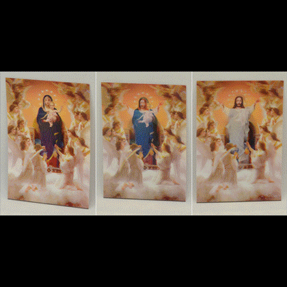
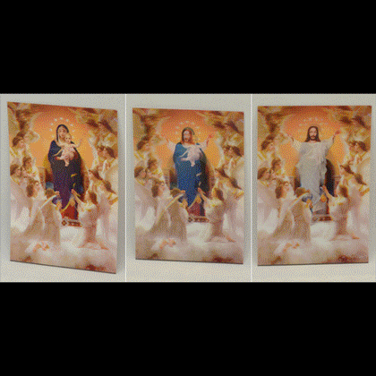

Recontextualizing Value/Meaning
How to explore the meaning of value through graphic design?
♥ Criticism → ♦ Judgement → ♣ Value → what is value?
The audience should be the general public, as well as peers, graphic designers.
Therefor I am looking at projects that work with heavy content, presented in a "simplified" style.
How to convey meaning, without becoming non-design, how to allow for humour or contrasts to narrate?
The goal is to explore how value can influence how something is judged. By juxtapozing imagery, playing with mediums, and our expectations I want to explore in the topic with different approaches:
Coding
3d
Installation
Collage (digital and physical)
Design
Curation
Interventions
"Searching for values design looks in the visual places"
"The content and effectiveness of communication have become strongly context-dependent, not least because the audience with whom the message communicates has itself matured"
– Max Bruinsma, 1999
George Orwell thought that to write against something gave his work more value, more of a purpose.
I would like to work with a project that allows me to be both shallow and more content based (deep), where one aspect can lend from the other. With this project I want to use "shallow" visual explorations to understand how our values affect our judgement. By later curating the visual reaserch, using tools such as narration, or story telling, to convey the projects content, or theoretical research. Ity is a topic that has a lot of images for me to work with, and one that allows for me to play with styles. The theme easily lends itself to the earea of kitsch, which I would love to lend from.


 
